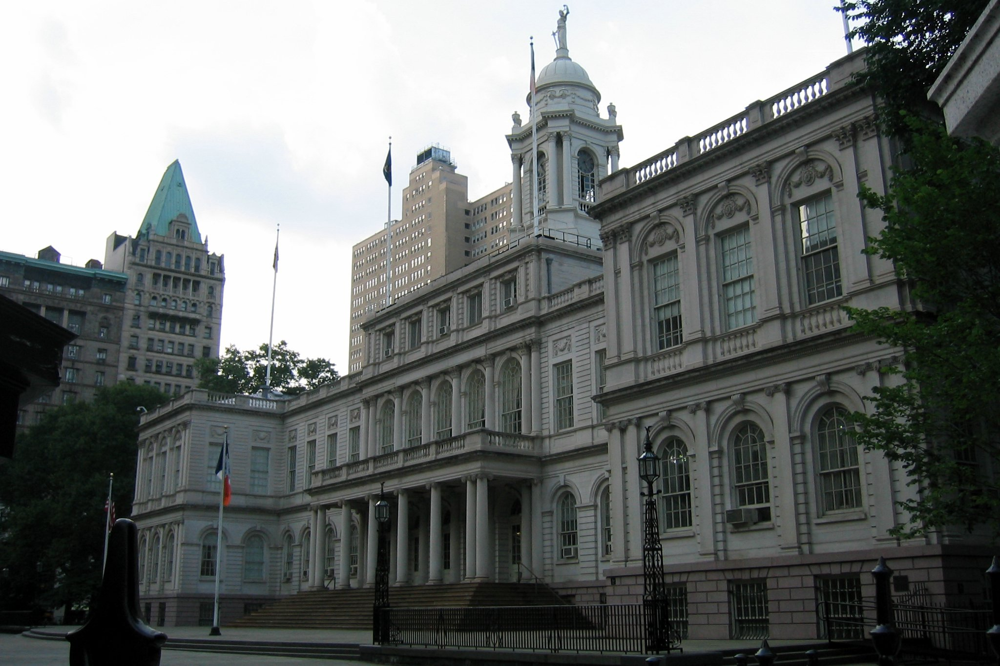

Homelessness Nonprofit Doubles as Donor Network for Politicians
May 23, 2018
Executives of the Acacia Network, which does over $1 billion dollars worth of business with the city and state, also donate significant funds to local politicians. Photo: Wally Gobetz, flickr, used under a Creative Commons license.
Executives and others tied to a nonprofit with over $1 billion dollars in business with the city and state make extensive contributions to many of the politicians responsible for distributing and overseeing those contracts, according to campaign finance records and tax disclosures.
The Acacia Network holds over $1 billion in contracts for homelessness and substance abuse programs from New York City and New York State. The organization has grown dramatically while fostering deep connections to many city and state politicians including Assembly Speaker Carl Heastie, Bronx Borough President Ruben Diaz Jr., City Comptroller Scott Stringer and State Senator Robert Rodriguez.
Three donations appear to violate tax laws prohibiting nonprofits from donating to political campaigns. Most, however, are legal--there is no prohibition on nonprofit employees donating to politicians from their own taxed income. But it shows the close connections between politics, money and poverty in the South Bronx, where elected officials allocate hundreds of millions of dollars annually to service organizations like Acacia that in turn support their election efforts and can provide them high-paying jobs when they leave office.
ACACIA'S GROWTH
The Acacia Network is one of the largest Latino-run nonprofits in the country.
To get there, it emphasized expansion and growth.
One subsidiary, when asked to describe its program's successes on its tax returns, describes itself in terms more like a sales prospectus than a service nonprofit.
"The growth of Acacia Network Housing has been extraordinary. From an initial $5 million contract with the NYC Department of Homeless Services in 2005, the organization had revenue of approximately 54 million (sic) in 2013, revenue for 2014 was $77 million and revenue for 2015 is $112 million," reads the document. "These sizable revenue increases have resulted in an approximately 44% annual growth rate. Acacia Network Housing, Inc.’s laser focus, however, is not on money but on individuals, families and communities in need. Currently the organization houses 1,366 families and 945 individuals."
Like a hedge fund, it pursues a growth strategy of acquiring the contracts, clients and assets of other nonprofit groups that have fallen on hard times or regulatory trouble. Through expansions, mergers and acquisitions, the Acacia Network now comprises over 40 affiliates and subsidiaries.
Its executive compensation matches its business-approach to social services. As CEO of the Acacia Network, Raul Russi’s total compensation nearly tripled between 2009 and 2016, going from $230,518 to $616,980. He has since made over $17,000 in political donations, in addition to donations he raised as an intermediary.
But despite the scope and scale of its operations, the organization keeps a low public profile.
“Acacia is the biggest nonprofit that nobody knows anything about,” said Angelo Falcon, a nationally-renowned expert on the politics of New York’s Puerto Rican community and president of the National Institute for Latino Policy.
THE ACACIA DONOR NETWORK
But while the nonprofit may not be a household name, it is well-known to politicians. Acacia executives—and sometimes the subsidiaries themselves—have made campaign contributions totaling over $195,000 dating back to 2000.
The donations come from executives, former executives and subcontractors paid through Acacia's government contracts and programs. RC Consulting Solutions Inc., a consultancy started by former executives Ruben Medina and Carlos Nazario to do business with Acacia donated over $30,000, while Acacia’s private security force donated another $7,500.
Two nonprofit Acacia subsidiaries, PROMESA Administrative Services Organization and BASICS, even donated almost $2,000 directly to candidates and the Bronx Democratic Party, in apparent violation of the tax code covering nonprofits.
According to the IRS, "Under the Internal Revenue Code, all section 501(c)(3) organizations are absolutely prohibited from directly or indirectly participating in, or intervening in, any political campaign on behalf of (or in opposition to) any candidate for elective public office. Contributions to political campaign funds or public statements of position (verbal or written) made on behalf of the organization in favor of or in opposition to any candidate for public office clearly violate the prohibition against political campaign activity. Violating this prohibition may result in denial or revocation of tax-exempt status and the imposition of certain excise taxes."
Much of this giving is centered around the Bronx and East Harlem, including over $25,000 in donations to the Bronx Democratic County Committee, $10,000 to Bronx Borough President Ruben Diaz Jr. and over $7,000 to Assemblyman Robert Rodriguez.
In recent years, Acacia has moved into building housing in collaboration with for-profit developers. One of these projects, a 13-story, 220-unit high-rise at 1675 Westchester Avenue in the Bronx, was approved for a zoning change last summer with Diaz Jr.'s approval.
Another project, the 12-story Acacia Gardens in Rodriguez's district in East Harlem, received $67.8 million in city assistance in the form of tax-exempt bonds and low-interest loans. The project received approval in 2016 from then-Council Speaker Melissa Mark-Viverito, who also spent $2 million in discretionary funds on the project.
Acacia executives donated nearly $6,000 to Mark-Viverito's campaigns directly.
In addition to contributing to politicians who support their projects directly, they also make contributions to politicians in a position to oversee their contracts. For example, Acacia CEO Raul Russi served as a campaign intermediary for city comptroller Scott Stringer, who has received over $5,000 from him and other Acacia-affiliated persons.
Stringer, in his position as comptroller, is responsible for monitoring and auditing Acacia’s over $1 billion dollars in city contracts. Stringer listed the city's Department of Homeless Services on a new "Agency Watchlist" of profligate city agencies. Acacia holds four of the top 10 largest DHS contracts, and accounts for 13 percent of the department's total expense contracts. Since Stringer took over as city comptroller in 2013, his office has not conducted any audits of Acacia Network subsidiaries directly.
A QUESTIONABLE RECORD
When state and city officials do audit Acacia groups, they have found repeated instances of gross financial mismanagement and high prices charged for poor services.
In 2015, a state audit found problems with over 90 percent of the $9 million of expenses it investigated.
$2.1 million dollars, or 23 percent of the costs examined, were unallowable outright. That included Promesa claiming disallowed costs on earlier audits as program expenses. "In essence, PROMESA initially billed OASAS for almost $400,000 of unallowable expenses and, after repaying, sought to recover their payment plus another $116,000 to make itself more than whole," reads the report.
In addition, the audit found that PROMESA charged the state $38,648 for lobbying costs and $55,733 that went towards a holiday party, retreats, golf, meals and an open bar for executives and employees.
Another $6.1 million of Promesa's claimed expenses were deemed questionable. Most of these involved transactions with related parties to provide administrative services, including other Acacia affiliates like the Promesa Administrative Services Organization, Basics Inc. and SERA Security LLC—the private security firm for which Acacia CEO Raul Russi is listed as the principle agent in incorporation documents filed with the New York Secretary of State. SERA Security Services also made $7,500 in donations to politicians.
Another 2015 report found that one Bronx Acacia shelter, The Stadium, charged the city more than twice the city’s listed rate and the rate charged by a comparable shelter, costing the city an additional $20.6 million per year.
The final report of the city's Department of Investigation that year found that Acacia charged the city between 2-3 times the area’s median rent to house homeless families in a Brooklyn apartment building with 48 combined fire, building, and housing violations.
Despite these documented issues, Acacia’s combined revenues grew at least $43 million from 2014 and 2015.
A LOBBYING FIRM WITH ACCESS
This revenue growth coincided with aggressive lobbying of the City Council on the budget. Disclosures show that Acacia paid $132,000 a year to the MirRam Group for lobbying council members including Mark-Viverito and Comptroller Stringer throughout the budget and capital allocation processes. MirRam, the lobbying firm of Luis Miranda Jr. and former Bronx Democratic Party leader Roberto Ramirez, had been seen by City Hall observers as the main conduit to Mark-Viverito.
Though Mark-Viverito has since left office, the MirRam ties still provide Acacia with access to an important politician: Carl Heastie, the speaker of the state assembly. Kim Ramos, a former MirRam partner and a one-time board member at Acacia subsidiary Community Association of Progressive Dominicans, now serves as the assembly speaker’s deputy secretary for intergovernmental affairs.
Heastie has other Acacia ties as well. In 2015, the New York Times reported that Acacia’s President Hector Diaz was instrumental in a series of actions that allowed Heastie to profit from the sale of a house his mother purchased with funds embezzled from a different nonprofit, in violation of a court order. Meanwhile, Acacia-affiliated executives, subsidiaries and contractors donated over $24,000 to the Bronx Democratic County Committee while Heastie was the committee’s chair.
A REVOLVING DOOR
Diaz is just example of Acacia’s executive leadership drawing directly from ranks of former politicians and political appointees.
Diaz joined Acacia after a long career in Bronx politics. A state assemblyman for over a decade, he left his seat to take a position as Bronx County Clerk in 1997. It was there that he neglected to file a judgement against Heastie’s mother that included a $40,000 restitution payment and an order “to monitor and determine good-faith sale of the house.” As a result, Heastie kept the house after his mother died, taking out mortgages against the property before selling it in 2005 for almost $200,000 more than his mother paid for it.
The City Council named Diaz to be city clerk in 2008, but he resigned a year later to become president of the Acacia Network. Diaz made $240,979 in 2016.
Acacia's CEO, Raul Russi, was a Giuliani appointee and was deeply implicated in a scandal involving disgraced Bronx State Senator Guy Velella.
In 2002, Velella, a well-connected Republican from the South Bronx and reported ally of Rudy Giuliani was charged with accepting bribes in a 25-count indictment. He would eventually plead guilty to one charge in exchange for a year-long sentence in jail starting in 2004.
At the time, Russi served as the executive of the little-known Local Conditional Release Commission. The Commission, under Russi’s direction, voted with one abstention to release Velella from jail after serving only three months of his sentence. After pronounced media furor and an inquiry by the city’s Department of Investigation that found serious irregularities, Russi resigned his position and Velella returned to jail.
The revolving door swings both ways. In 2015, Governor Andrew Cuomo named Roberto Velez, an Acacia vice president, as his commissioner of the Office of Children and Family Services. Velez lasted five months in the position and has since started a private legal practice.
The revolving door swung again in 2015, when Maria del Carmen Arroyo abruptly resigned from the city council and joined Acacia shortly after.
del Carmen Arroyo, daughter of Assemblywoman Carmen Arroyo (who received $6,650 in Acacia donations), had a problematic past in both politics and nonprofits. In her short political career, she was implicated in signature fraud, was criticized for paying her husband with campaign funds and benefitted from a nephew's embezzlement from the nonprofit that del Carmen Arroyo once ran.
Before becoming a councilmember, del Carmen Arroyo was a director at Narco Freedom, an organization which ran three-quarters houses for substance abuse. Narco Freedom collapsed in 2015, after its executives were indicted for massive fraud. The organization's Brooklyn assets and clientele were transferred to the Acacia Network in 2015.
“In New York City there is an intertwining of elected officials and the nonprofit sectors that gets described by its advocates as a collaborative effort and is largely in reality simply patronage that you can’t do through government sources anymore,” said Thad Calabrese, associate professor of public and nonprofit financial management at NYU's Wagner School of Public Service.
ACACIA'S CONTRIBUTIONS
Campaign finance disclosures by the city and state include over $195,000 in political donations related to the Acacia Network. Some of these come from executives or former executives, others come from subcontractors or subsidiaries of Acacia themselves. Use this database to search for contributions to specific politicians or campaigns.
Total Contributions:
| CONTRIBUTOR | ACACIA CONNECTION | AMOUNT | RECIPIENT | CONTRIBUTION DATE |
| Eugenio Russi | Brother of Acacia CEO, CEO of Hispanics United, Buffalo affiliate | $100.00 | Friends Of Bill Stachowski, State Senator | 8/26/10 |
| Eugenio Russi | Brother of Acacia CEO, CEO of Hispanics United, Buffalo affiliate | $125.00 | Brown For Buffalo, Mayor, Buffalo | 8/27/09 |
| Eugenio Russi | Brother of Acacia CEO, CEO of Hispanics United, Buffalo affiliate | $50.00 | Brown For Buffalo, Mayor, Buffalo | 8/29/13 |
| Eugenio Russi | Brother of Acacia CEO, CEO of Hispanics United, Buffalo affiliate | $500.00 | Brown For Buffalo, Mayor, Buffalo | 5/29/14 |
| Eugenio Russi | Brother of Acacia CEO, CEO of Hispanics United, Buffalo affiliate | $500.00 | Brown For Buffalo, Mayor, Buffalo | 7/19/17 |
| Eugenio Russi | Brother of Acacia CEO, CEO of Hispanics United, Buffalo affiliate | $50.00 | Brown For Buffalo, Mayor, Buffalo | 7/31/17 |
| Eugenio Russi | Brother of Acacia CEO, CEO of Hispanics United, Buffalo affiliate | $500.00 | Brown For Buffalo, Mayor, Buffalo | 1/15/09 |
| Eugenio Russi | Brother of Acacia CEO, CEO of Hispanics United, Buffalo affiliate | $100.00 | Brown For Buffalo, Mayor, Buffalo | 12/12/13 |
| Eugenio Russi | Brother of Acacia CEO, CEO of Hispanics United, Buffalo affiliate | $100.00 | Brown For Buffalo, Mayor, Buffalo | 12/9/14 |
| Eugenio Russi | Brother of Acacia CEO, CEO of Hispanics United, Buffalo affiliate | $200.00 | Brown For Buffalo, Mayor, Buffalo | 10/20/10 |
| Eugenio Russi | Brother of Acacia CEO, CEO of Hispanics United, Buffalo affiliate | $200.00 | Brown For Buffalo, Mayor, Buffalo | 5/16/17 |
| Eugenio Russi | Brother of Acacia CEO, CEO of Hispanics United, Buffalo affiliate | $200.00 | Citizens For Sam Hoyt, Member of Assembly | 8/21/08 |
| Eugenio Russi | Brother of Acacia CEO, CEO of Hispanics United, Buffalo affiliate | $500.00 | Citizens For Sam Hoyt, Member of Assembly | 8/24/10 |
| Eugenio Russi | Brother of Acacia CEO, CEO of Hispanics United, Buffalo affiliate | $500.00 | Citizens For Sam Hoyt, Member of Assembly | 7/19/05 |
| Eugenio Russi | Brother of Acacia CEO, CEO of Hispanics United, Buffalo affiliate | $500.00 | Citizens For Sam Hoyt, Member of Assembly | 8/17/07 |
| Eugenio Russi | Brother of Acacia CEO, CEO of Hispanics United, Buffalo affiliate | $500.00 | Citizens For Sam Hoyt, Member of Assembly | 5/10/06 |
| Eugenio Russi | Brother of Acacia CEO, CEO of Hispanics United, Buffalo affiliate | $250.00 | Citizens For Sam Hoyt, Member of Assembly | 4/28/10 |
| Eugenio Russi | Brother of Acacia CEO, CEO of Hispanics United, Buffalo affiliate | $500.00 | Citizens For Sam Hoyt, Member of Assembly | 5/10/06 |
| Eugenio Russi | Brother of Acacia CEO, CEO of Hispanics United, Buffalo affiliate | $200.00 | Citizens For Sam Hoyt, Member of Assembly | 10/17/08 |
| Eugenio Russi | Brother of Acacia CEO, CEO of Hispanics United, Buffalo affiliate | $100.00 | Committee To Elect David A. Martinez, County Legislator, Erie | 9/7/17 |
| Eugenio Russi | Brother of Acacia CEO, CEO of Hispanics United, Buffalo affiliate | $500.00 | Erie County Democratic Committee, Erie | 10/6/11 |
| Eugenio Russi | Brother of Acacia CEO, CEO of Hispanics United, Buffalo affiliate | $250.00 | Erie County Democratic Committee, Erie | 12/5/06 |
| Eugenio Russi | Brother of Acacia CEO, CEO of Hispanics United, Buffalo affiliate | $100.00 | Erie County Democratic Committee, Erie | 9/11/09 |
| Eugenio Russi | Brother of Acacia CEO, CEO of Hispanics United, Buffalo affiliate | $200.00 | Erie County Democratic Committee, Erie | 11/22/06 |
| Eugenio Russi | Brother of Acacia CEO, CEO of Hispanics United, Buffalo affiliate | $500.00 | Erie County Democratic Committee, Erie | 8/11/10 |
| Eugenio Russi | Brother of Acacia CEO, CEO of Hispanics United, Buffalo affiliate | $100.00 | Erie County Democratic Committee, Erie | 12/17/10 |
| Eugenio Russi | Brother of Acacia CEO, CEO of Hispanics United, Buffalo affiliate | $25.00 | Erie County Democratic Committee, Erie | 9/11/09 |
| Eugenio Russi | Brother of Acacia CEO, CEO of Hispanics United, Buffalo affiliate | $500.00 | Erie County Democratic Committee-Housekeeping, Erie | 7/26/07 |
| Eugenio Russi | Brother of Acacia CEO, CEO of Hispanics United, Buffalo affiliate | $100.00 | Erie County Democratic Committee-Housekeeping, Erie | 5/16/11 |
| Eugenio Russi | Brother of Acacia CEO, CEO of Hispanics United, Buffalo affiliate | $250.00 | Friends Of David A. Rivera, Councilman, Buffalo | 12/10/10 |
| Eugenio Russi | Brother of Acacia CEO, CEO of Hispanics United, Buffalo affiliate | $100.00 | Friends Of David A. Rivera, Councilman, Buffalo | 4/28/09 |
| Eugenio Russi | Brother of Acacia CEO, CEO of Hispanics United, Buffalo affiliate | $200.00 | Friends Of Jim Keane, County Executive, Erie | 2/26/07 |
| Eugenio Russi | Brother of Acacia CEO, CEO of Hispanics United, Buffalo affiliate | $100.00 | Friends Of Jim Keane, County Executive, Erie | 3/27/07 |
| Eugenio Russi | Brother of Acacia CEO, CEO of Hispanics United, Buffalo affiliate | $75.00 | Friends Of Jim Keane, County Executive, Erie | 10/26/07 |
| Eugenio Russi | Brother of Acacia CEO, CEO of Hispanics United, Buffalo affiliate | $1,000.00 | Friends Of Juanita, Mayor, Syracuse | 9/5/17 |
| Eugenio Russi | Brother of Acacia CEO, CEO of Hispanics United, Buffalo affiliate | $1,000.00 | Friends Of Juanita, Mayor, Syracuse | 3/29/17 |
| Eugenio Russi | Brother of Acacia CEO, CEO of Hispanics United, Buffalo affiliate | $500.00 | Friends Of Juanita, Mayor, Syracuse | 7/12/17 |
| Eugenio Russi | Brother of Acacia CEO, CEO of Hispanics United, Buffalo affiliate | $100.00 | Friends Of Judge Betty Calvo-Torres, City Court Judge, Buffalo | 2/6/17 |
| Eugenio Russi | Brother of Acacia CEO, CEO of Hispanics United, Buffalo affiliate | $175.00 | Friends Of Judge Betty Calvo-Torres, City Court Judge, Buffalo | 5/22/17 |
| Eugenio Russi | Brother of Acacia CEO, CEO of Hispanics United, Buffalo affiliate | $150.00 | Friends Of Judge Betty Calvo-Torres, City Court Judge, Buffalo | 8/8/07 |
| Eugenio Russi | Brother of Acacia CEO, CEO of Hispanics United, Buffalo affiliate | $50.00 | Friends Of Maria Whyte, County Clerk, Erie | 11/4/11 |
| Eugenio Russi | Brother of Acacia CEO, CEO of Hispanics United, Buffalo affiliate | $100.00 | Friends Of Maria Whyte, County Clerk, Erie | 5/20/11 |
| Eugenio Russi | Brother of Acacia CEO, CEO of Hispanics United, Buffalo affiliate | $100.00 | Friends Of Mark Poloncarz, County Executive, Erie | 12/16/13 |
| Eugenio Russi | Brother of Acacia CEO, CEO of Hispanics United, Buffalo affiliate | $100.00 | Friends Of Mark Poloncarz, County Executive, Erie | 10/25/13 |
| Eugenio Russi | Brother of Acacia CEO, CEO of Hispanics United, Buffalo affiliate | $50.00 | Friends To Elect Michele Iannello, County Legislator, Erie | 6/18/09 |
| Eugenio Russi | Brother of Acacia CEO, CEO of Hispanics United, Buffalo affiliate | $100.00 | Kearns For Erie County Clerk, County Clerk, Erie | 10/26/17 |
| Eugenio Russi | Brother of Acacia CEO, CEO of Hispanics United, Buffalo affiliate | $100.00 | Kennedy For Senate, State Senator | 10/15/14 |
| Eugenio Russi | Brother of Acacia CEO, CEO of Hispanics United, Buffalo affiliate | $200.00 | Kennedy For Senate, State Senator | 9/24/15 |
| Eugenio Russi | Brother of Acacia CEO, CEO of Hispanics United, Buffalo affiliate | $100.00 | Kennedy For Senate, State Senator | 3/9/17 |
| Eugenio Russi | Brother of Acacia CEO, CEO of Hispanics United, Buffalo affiliate | $50.00 | Kennedy For Senate, State Senator | 3/31/14 |
| Eugenio Russi | Brother of Acacia CEO, CEO of Hispanics United, Buffalo affiliate | $250.00 | Kennedy For Senate, State Senator | 3/27/15 |
| Eugenio Russi | Brother of Acacia CEO, CEO of Hispanics United, Buffalo affiliate | $100.00 | Kennedy For Senate, State Senator | 9/23/13 |
| Eugenio Russi | Brother of Acacia CEO, CEO of Hispanics United, Buffalo affiliate | $100.00 | Kennedy For Senate, State Senator | 4/27/17 |
| Eugenio Russi | Brother of Acacia CEO, CEO of Hispanics United, Buffalo affiliate | $100.00 | Marc A. Coppola For State Senate, State Senator | 9/22/10 |
| Eugenio Russi | Brother of Acacia CEO, CEO of Hispanics United, Buffalo affiliate | $500.00 | Marc A. Coppola For State Senate, State Senator | 7/13/10 |
| Eugenio Russi | Brother of Acacia CEO, CEO of Hispanics United, Buffalo affiliate | $500.00 | Marc A. Coppola For State Senate, State Senator | 7/20/10 |
| Eugenio Russi | Brother of Acacia CEO, CEO of Hispanics United, Buffalo affiliate | $250.00 | Quinn For Ny, State Senator | 9/22/10 |
| Eugenio Russi | Brother of Acacia CEO, CEO of Hispanics United, Buffalo affiliate | $100.00 | Sean Ryan For Assembly, Member of Assembly | 7/10/14 |
| Eugenio Russi | Brother of Acacia CEO, CEO of Hispanics United, Buffalo affiliate | $200.00 | Sean Ryan For Assembly, Member of Assembly | 12/10/13 |
| Eugenio Russi | Brother of Acacia CEO, CEO of Hispanics United, Buffalo affiliate | $100.00 | Sean Ryan For Assembly, Member of Assembly | 3/9/17 |
| Eugenio Russi | Brother of Acacia CEO, CEO of Hispanics United, Buffalo affiliate | $250.00 | Sean Ryan For Assembly, Member of Assembly | 5/14/13 |
| Eugenio Russi | Brother of Acacia CEO, CEO of Hispanics United, Buffalo affiliate | $500.00 | Sean Ryan For Assembly, Member of Assembly | 5/12/16 |
| Eugenio Russi | Brother of Acacia CEO, CEO of Hispanics United, Buffalo affiliate | $250.00 | Sean Ryan For Assembly, Member of Assembly | 10/17/14 |
| Eugenio Russi | Brother of Acacia CEO, CEO of Hispanics United, Buffalo affiliate | $200.00 | Sean Ryan For Assembly, Member of Assembly | 10/7/15 |
| Eugenio Russi | Brother of Acacia CEO, CEO of Hispanics United, Buffalo affiliate | $300.00 | Sean Ryan For Assembly, Member of Assembly | 9/6/12 |
| Eugenio Russi | Brother of Acacia CEO, CEO of Hispanics United, Buffalo affiliate | $200.00 | Small For Senate, State Senator | 10/24/16 |
| Eugenio Russi | Brother of Acacia CEO, CEO of Hispanics United, Buffalo affiliate | $100.00 | Spitzer Paterson 2006*, Governor | 10/10/06 |
| Eugenio Russi | Brother of Acacia CEO, CEO of Hispanics United, Buffalo affiliate | $600.00 | Spitzer Paterson 2006*, Governor | 12/19/05 |
| Eugenio Russi | Brother of Acacia CEO, CEO of Hispanics United, Buffalo affiliate | $241.50 | Spitzer Paterson 2006*, Governor | 4/22/06 |
| Eugenio Russi | Brother of Acacia CEO, CEO of Hispanics United, Buffalo affiliate | $75.00 | Spitzer Paterson 2006*, Governor | 7/28/06 |
| Eugenio Russi | Brother of Acacia CEO, CEO of Hispanics United, Buffalo affiliate | $50.00 | Supporters Of Antoine M. Thompson, State Senator | 12/1/09 |
| Eugenio Russi | Brother of Acacia CEO, CEO of Hispanics United, Buffalo affiliate | $100.00 | Supporters Of Antoine M. Thompson, State Senator | 10/24/10 |
| Raul Russi | CEO, Acacia Network. Former Commissioner of NYC Department of Probation | $125.00 | Supporters Of Antoine M. Thompson, State Senator | 4/8/08 |
| Raul Russi | CEO, Acacia Network. Former Commissioner of NYC Department of Probation | $300.00 | Supporters Of Antoine M. Thompson, State Senator | 10/13/10 |
| Raul Russi | CEO, Acacia Network. Former Commissioner of NYC Department of Probation | $500.00 | Andrew Cuomo 2018, Inc., Governor | 12/20/11 |
| Raul Russi | CEO, Acacia Network. Former Commissioner of NYC Department of Probation | $600.00 | Bronx Democratic County Committee - Housekeeping, Bronx | 9/11/14 |
| Raul Russi | CEO, Acacia Network. Former Commissioner of NYC Department of Probation | $180.00 | Bronx Democratic County Committee - Housekeeping, Bronx | 7/16/10 |
| Raul Russi | CEO, Acacia Network. Former Commissioner of NYC Department of Probation | $1,000.00 | Brown For Buffalo, Mayor, Buffalo | 7/19/17 |
| Raul Russi | CEO, Acacia Network. Former Commissioner of NYC Department of Probation | $250.00 | Carmen E. Arroyo For Assembly, Member of Assembly | 3/26/12 |
| Raul Russi | CEO, Acacia Network. Former Commissioner of NYC Department of Probation | $500.00 | Carmen E. Arroyo For Assembly, Member of Assembly | 8/8/11 |
| Raul Russi | CEO, Acacia Network. Former Commissioner of NYC Department of Probation | $500.00 | Carrion Nyc, New York | 6/19/08 |
| Raul Russi | CEO, Acacia Network. Former Commissioner of NYC Department of Probation | $500.00 | Carrion Nyc, New York | 4/24/06 |
| Raul Russi | CEO, Acacia Network. Former Commissioner of NYC Department of Probation | $200.00 | Committee To Re-Elect Justice Lucindo Suarez, Sup. Court Justice | 5/21/09 |
| Raul Russi | CEO, Acacia Network. Former Commissioner of NYC Department of Probation | $500.00 | Crespo For Assembly, Member of Assembly | 4/16/14 |
| Raul Russi | CEO, Acacia Network. Former Commissioner of NYC Department of Probation | $200.00 | Diaz 2009, Borough President, Bronx | 10/31/07 |
| Raul Russi | CEO, Acacia Network. Former Commissioner of NYC Department of Probation | $1,000.00 | Eric Gonzalez For Brooklyn District Attorney, District Attorney, Kings | 1/5/17 |
| Raul Russi | CEO, Acacia Network. Former Commissioner of NYC Department of Probation | $100.00 | Friends Of Adriano Espaillat, State Senator | 9/12/10 |
| Raul Russi | CEO, Acacia Network. Former Commissioner of NYC Department of Probation | $250.00 | Friends Of Carl E Heastie, Member of Assembly | 6/7/12 |
| Raul Russi | CEO, Acacia Network. Former Commissioner of NYC Department of Probation | $500.00 | Friends Of Carl E Heastie, Member of Assembly | 1/7/16 |
| Raul Russi | CEO, Acacia Network. Former Commissioner of NYC Department of Probation | $100.00 | Friends Of Guillermo Linares, Member of Assembly | 9/9/10 |
| Raul Russi | CEO, Acacia Network. Former Commissioner of NYC Department of Probation | $400.00 | Friends Of Jose Rivera, Member of Assembly | 8/6/08 |
| Raul Russi | CEO, Acacia Network. Former Commissioner of NYC Department of Probation | $500.00 | Friends Of Juanita, Mayor, Syracuse | 7/14/17 |
| Raul Russi | CEO, Acacia Network. Former Commissioner of NYC Department of Probation | $100.00 | Friends Of Michael Benjamin, Member of Assembly | 2/26/03 |
| Raul Russi | CEO, Acacia Network. Former Commissioner of NYC Department of Probation | $250.00 | Friends Of Robert J. Rodriguez, Member of Assembly | 6/30/15 |
| Raul Russi | CEO, Acacia Network. Former Commissioner of NYC Department of Probation | $250.00 | Friends Of Robert J. Rodriguez, Member of Assembly | 6/29/11 |
| Raul Russi | CEO, Acacia Network. Former Commissioner of NYC Department of Probation | $300.00 | Friends Of Senator Gonzalez, State Senator, | 5/2/02 |
| Raul Russi | CEO, Acacia Network. Former Commissioner of NYC Department of Probation | $250.00 | Friends Of Victor Pichardo, Member of Assembly, | 10/1/15 |
| Raul Russi | CEO, Acacia Network. Former Commissioner of NYC Department of Probation | $400.00 | Joe Fox For Assembly, Member of Assembly, | 7/29/10 |
| Raul Russi | CEO, Acacia Network. Former Commissioner of NYC Department of Probation | $250.00 | Julissa For New York, Queens | 1/10/16 |
| Raul Russi | CEO, Acacia Network. Former Commissioner of NYC Department of Probation | $250.00 | Julissa For New York, Queens | 1/10/16 |
| Raul Russi | CEO, Acacia Network. Former Commissioner of NYC Department of Probation | $320.00 | New Yorkers For Diaz, New York | 5/9/14 |
| Raul Russi | CEO, Acacia Network. Former Commissioner of NYC Department of Probation | $300.00 | New Yorkers For Diaz, New York | 7/12/17 |
| Raul Russi | CEO, Acacia Network. Former Commissioner of NYC Department of Probation | $250.00 | New Yorkers For Robert Rodriguez, Comptroller, New York | 3/10/17 |
| Raul Russi | CEO, Acacia Network. Former Commissioner of NYC Department of Probation | $200.00 | Rita Mella For Surrogate'S Court, Surrogate Court Judge, New York | 8/9/12 |
| Raul Russi | CEO, Acacia Network. Former Commissioner of NYC Department of Probation | $250.00 | Rita Mella For Surrogate'S Court, Surrogate Court Judge, New York | 6/25/12 |
| Raul Russi | CEO, Acacia Network. Former Commissioner of NYC Department of Probation | $250.00 | Rosie Mendez 2013, City Council, New York | 2/28/13 |
| Raul Russi | CEO, Acacia Network. Former Commissioner of NYC Department of Probation | $250.00 | Ruben Diaz For Council, City Council, Bronx | 9/11/17 |
| Raul Russi | CEO, Acacia Network. Former Commissioner of NYC Department of Probation | $500.00 | Ruben Diaz For State Senate, State Senator, | 10/29/09 |
| Raul Russi | CEO, Acacia Network. Former Commissioner of NYC Department of Probation | $250.00 | Salamanca 2017, City Council, Bronx | 1/11/16 |
| Raul Russi | CEO, Acacia Network. Former Commissioner of NYC Department of Probation | $250.00 | Salamanca For Council, City Council, Bronx | 6/22/16 |
| Raul Russi | CEO, Acacia Network. Former Commissioner of NYC Department of Probation | $300.00 | Viverito 2009, City Council, New York | 12/25/09 |
| Raul Russi | CEO, Acacia Network. Former Commissioner of NYC Department of Probation | $250.00 | Viverito 2013, City Council, New York | 4/26/12 |
| Raul Russi | CEO, Acacia Network. Former Commissioner of NYC Department of Probation | $250.00 | Viverito 2013, City Council, New York | 4/27/11 |
| Raul Russi | CEO, Acacia Network. Former Commissioner of NYC Department of Probation | $250.00 | Viverito Ny, New York | 4/19/16 |
| Raul Russi | CEO, Acacia Network. Former Commissioner of NYC Department of Probation | $250.00 | Viverito Ny, New York | 4/2/15 |
| Raul Russi | CEO, Acacia Network. Former Commissioner of NYC Department of Probation | $250.00 | Viverito Ny, New York | 1/10/16 |
| Raul Russi | CEO, Acacia Network. Former Commissioner of NYC Department of Probation | $250.00 | Ydanis For New York, New York | 5/11/17 |
| Rody Russi | Wife of Raul Russi, CEO Acacia Network | $250.00 | Gibson For City Council, City Council, Bronx | 11/1/13 |
| Rody Russi | Wife of Raul Russi, CEO Acacia Network | $400.00 | Carrion 2013, Mayor, New York | 10/10/13 |
| James Mattel | Husband of Pamela Mattel, Exec VP and COO | $300.00 | Friends Of John Carway, Supervisor, North Hempstead | 9/6/07 |
| James Mattel | Husband of Pamela Mattel, Exec VP and COO | $400.00 | New Yorkers For Diaz, New York | 5/18/16 |
| Pamela S Mattel | Exec VP and COO, Acacia Network | $400.00 | New Yorkers For Thompson, Kings | 7/10/09 |
| Pamela S Mattel | Exec VP and COO, Acacia Network | $1,200.00 | Bronx Democratic County Committee - Housekeeping, Bronx | 7/16/10 |
| Pamela S Mattel | Exec VP and COO, Acacia Network | $300.00 | Carrion Nyc, New York | 5/14/07 |
| Pamela S Mattel | Exec VP and COO, Acacia Network | $400.00 | Friends Of Jose Rivera, Member of Assembly, | 8/6/08 |
| Pamela S Mattel | Exec VP and COO, Acacia Network | $250.00 | Friends Of Robert J. Rodriguez, Member of Assembly | 6/30/15 |
| Pamela S Mattel | Exec VP and COO, Acacia Network | $250.00 | Friends Of Robert J. Rodriguez, Member of Assembly | 6/24/11 |
| Pamela S Mattel | Exec VP and COO, Acacia Network | $250.00 | Friends Of Robert J. Rodriguez, Member of Assembly | 4/10/14 |
| Pamela S Mattel | Exec VP and COO, Acacia Network | $250.00 | Stringer 2013, Comptroller, New York | 7/5/13 |
| Pamela S Mattel | Exec VP and COO, Acacia Network | $250.00 | Viverito 2013, City Council, New York | 4/26/12 |
| Pamela S Mattel | Exec VP and COO, Acacia Network | $250.00 | Viverito 2013, City Council, New York | 4/27/11 |
| Pamela Mattel | Exec VP and COO, Acacia Network | $500.00 | Brown For Buffalo, Mayor, Buffalo | 7/19/17 |
| Pamela Mattel | Exec VP and COO, Acacia Network | $250.00 | Diaz 2009, Borough President, Bronx | 1/11/09 |
| Pamela Mattel | Exec VP and COO, Acacia Network | $100.00 | Friends Of Guillermo Linares, Member of Assembly, | 9/13/10 |
| Pamela Mattel | Exec VP and COO, Acacia Network | $250.00 | New Yorkers For Diaz, New York | 5/6/15 |
| Pamela Mattel | Exec VP and COO, Acacia Network | $250.00 | New Yorkers For Robert Rodriguez, Comptroller, New York | 3/10/17 |
| Pamela Mattel | Exec VP and COO, Acacia Network | $200.00 | Rita Mella For Surrogate'S Court, Surrogate Court Judge, New York | 8/9/12 |
| Pamela Mattel | Exec VP and COO, Acacia Network | $300.00 | Viverito 2009, City Council, New York | 2/15/10 |
| Hector A Diaz | President, Acacia Network, Former State Assemblyman, Bronx City Clerk, NYC City Clerk | $200.00 | Walter Rivera For Greenburgh Town Court, Town Justice, Greenburgh | 9/13/11 |
| Hector J Diaz | President, Acacia Network, Former State Assemblyman, Bronx City Clerk, NYC City Clerk | $100.00 | Friends Of John Liu, Mayor, Queens | 8/18/13 |
| Hector L Diaz | President, Acacia Network, Former State Assemblyman, Bronx City Clerk, NYC City Clerk | $500.00 | Andrew Cuomo 2018, Inc., Governor | 12/20/11 |
| Hector L Diaz | President, Acacia Network, Former State Assemblyman, Bronx City Clerk, NYC City Clerk | $100.00 | Arturo Schomburg Democratic Club | 4/27/12 |
| Hector L Diaz | President, Acacia Network, Former State Assemblyman, Bronx City Clerk, NYC City Clerk | $600.00 | Bronx Democratic County Committee - Housekeeping, Bronx | 9/3/14 |
| Hector L Diaz | President, Acacia Network, Former State Assemblyman, Bronx City Clerk, NYC City Clerk | $200.00 | Carmen E. Arroyo For Assembly, Member of Assembly | 3/26/12 |
| Hector L Diaz | President, Acacia Network, Former State Assemblyman, Bronx City Clerk, NYC City Clerk | $400.00 | Carmen E. Arroyo For Assembly, Member of Assembly | 4/18/16 |
| Hector L Diaz | President, Acacia Network, Former State Assemblyman, Bronx City Clerk, NYC City Clerk | $200.00 | Carmen E. Arroyo For Assembly, Member of Assembly | 8/19/11 |
| Hector L Diaz | President, Acacia Network, Former State Assemblyman, Bronx City Clerk, NYC City Clerk | $250.00 | Committee To Elect Robert T Johnson, District Attorney, Bronx | 6/2/11 |
| Hector L Diaz | President, Acacia Network, Former State Assemblyman, Bronx City Clerk, NYC City Clerk | $500.00 | Friends Of Carl E Heastie, Member of Assembly, | 1/5/16 |
| Hector L Diaz | President, Acacia Network, Former State Assemblyman, Bronx City Clerk, NYC City Clerk | $200.00 | Friends Of Guillermo Linares, Member of Assembly, | 3/14/12 |
| Hector L Diaz | President, Acacia Network, Former State Assemblyman, Bronx City Clerk, NYC City Clerk | $250.00 | Friends Of Robert J. Rodriguez, Member of Assembly | 7/10/15 |
| Hector L Diaz | President, Acacia Network, Former State Assemblyman, Bronx City Clerk, NYC City Clerk | $200.00 | Friends Of Robert J. Rodriguez, Member of Assembly | 5/31/16 |
| Hector L Diaz | President, Acacia Network, Former State Assemblyman, Bronx City Clerk, NYC City Clerk | $250.00 | Friends Of Robert J. Rodriguez, Member of Assembly | 3/27/14 |
| Hector L Diaz | President, Acacia Network, Former State Assemblyman, Bronx City Clerk, NYC City Clerk | $250.00 | Friends Of Robert J. Rodriguez, Member of Assembly | 6/28/11 |
| Hector L Diaz | President, Acacia Network, Former State Assemblyman, Bronx City Clerk, NYC City Clerk | $200.00 | Gibson For City Council, City Council, Bronx | 6/3/13 |
| Hector L Diaz | President, Acacia Network, Former State Assemblyman, Bronx City Clerk, NYC City Clerk | $250.00 | Gibson For City Council, City Council, Bronx | 11/1/13 |
| Hector L Diaz | President, Acacia Network, Former State Assemblyman, Bronx City Clerk, NYC City Clerk | $250.00 | Judge Malave-Gonzalez For Surrogate, Surrogate Court Judge, Bronx | 6/26/12 |
| Hector L Diaz | President, Acacia Network, Former State Assemblyman, Bronx City Clerk, NYC City Clerk | $50.00 | New Yorkers For Diaz, New York | 3/14/16 |
| Hector L Diaz | President, Acacia Network, Former State Assemblyman, Bronx City Clerk, NYC City Clerk | $250.00 | New Yorkers For Diaz, New York | 5/6/15 |
| Hector L Diaz | President, Acacia Network, Former State Assemblyman, Bronx City Clerk, NYC City Clerk | $300.00 | New Yorkers For Diaz, New York | 7/12/17 |
| Hector L Diaz | President, Acacia Network, Former State Assemblyman, Bronx City Clerk, NYC City Clerk | $250.00 | New Yorkers For Diaz, New York | 6/30/16 |
| Hector L Diaz | President, Acacia Network, Former State Assemblyman, Bronx City Clerk, NYC City Clerk | $320.00 | New Yorkers For Diaz, New York | 5/9/14 |
| Hector L Diaz | President, Acacia Network, Former State Assemblyman, Bronx City Clerk, NYC City Clerk | $200.00 | New Yorkers For Diaz, New York | 10/15/14 |
| Hector L Diaz | President, Acacia Network, Former State Assemblyman, Bronx City Clerk, NYC City Clerk | $250.00 | Rosie Mendez 2013, City Council, New York | 2/28/13 |
| Hector L Diaz | President, Acacia Network, Former State Assemblyman, Bronx City Clerk, NYC City Clerk | $500.00 | Stringer 2013, Comptroller, New York | 6/27/13 |
| Hector L Diaz | President, Acacia Network, Former State Assemblyman, Bronx City Clerk, NYC City Clerk | $200.00 | Stringer 2013, Comptroller, New York | 4/20/12 |
| Hector L Diaz | President, Acacia Network, Former State Assemblyman, Bronx City Clerk, NYC City Clerk | $200.00 | Stringer 2013, Comptroller, New York | 6/2/11 |
| Hector L Diaz | President, Acacia Network, Former State Assemblyman, Bronx City Clerk, NYC City Clerk | $300.00 | Stringer 2017, Comptroller, New York | 7/11/16 |
| Hector L Diaz | President, Acacia Network, Former State Assemblyman, Bronx City Clerk, NYC City Clerk | $250.00 | Stringer 2017, Comptroller, New York | 1/11/16 |
| Hector L Diaz | President, Acacia Network, Former State Assemblyman, Bronx City Clerk, NYC City Clerk | $200.00 | Stringer 2017, Comptroller, New York | 5/4/17 |
| Hector L Diaz | President, Acacia Network, Former State Assemblyman, Bronx City Clerk, NYC City Clerk | $400.00 | Viverito 2009, City Council, New York | 1/2/10 |
| Hector L Diaz | President, Acacia Network, Former State Assemblyman, Bronx City Clerk, NYC City Clerk | $250.00 | Viverito 2013, City Council, New York | 4/27/11 |
| Hector L Diaz | President, Acacia Network, Former State Assemblyman, Bronx City Clerk, NYC City Clerk | $250.00 | Viverito 2013, City Council, New York | 4/26/12 |
| Hector L Diaz | President, Acacia Network, Former State Assemblyman, Bronx City Clerk, NYC City Clerk | $250.00 | Ydanis For New York, New York | 5/11/17 |
| Hector Diaz | President, Acacia Network, Former State Assemblyman, Bronx City Clerk, NYC City Clerk | $100.00 | Adam Clayton Powell For State Assembly, Member of Assembly | 8/28/09 |
| Hector Diaz | President, Acacia Network, Former State Assemblyman, Bronx City Clerk, NYC City Clerk | $50.00 | Adam Clayton Powell For State Assembly, Member of Assembly | 12/4/09 |
| Hector Diaz | President, Acacia Network, Former State Assemblyman, Bronx City Clerk, NYC City Clerk | $1,200.00 | Bronx Democratic County Committee - Housekeeping, Bronx | 7/16/10 |
| Hector Diaz | President, Acacia Network, Former State Assemblyman, Bronx City Clerk, NYC City Clerk | $1,000.00 | Bronx Democratic County Committee - Housekeeping, Bronx | 7/16/09 |
| Hector Diaz | President, Acacia Network, Former State Assemblyman, Bronx City Clerk, NYC City Clerk | $500.00 | Brown For Buffalo, Mayor, Buffalo | 7/19/17 |
| Hector Diaz | President, Acacia Network, Former State Assemblyman, Bronx City Clerk, NYC City Clerk | $1,000.00 | Carrion 2013, Mayor, New York | 10/3/13 |
| Hector Diaz | President, Acacia Network, Former State Assemblyman, Bronx City Clerk, NYC City Clerk | $250.00 | Committee To Elect Naomi Rivera, Member of Assembly | 5/17/12 |
| Hector Diaz | President, Acacia Network, Former State Assemblyman, Bronx City Clerk, NYC City Clerk | $200.00 | Committee To Re-Elect Justice Lucindo Suarez, Sup. Court Justice | 5/21/09 |
| Hector Diaz | President, Acacia Network, Former State Assemblyman, Bronx City Clerk, NYC City Clerk | $300.00 | Committee To Re-Elect Justice Lucindo Suarez, Sup. Court Justice | 7/28/09 |
| Hector Diaz | President, Acacia Network, Former State Assemblyman, Bronx City Clerk, NYC City Clerk | $300.00 | Crespo For Assembly, Member of Assembly | 4/30/14 |
| Hector Diaz | President, Acacia Network, Former State Assemblyman, Bronx City Clerk, NYC City Clerk | $1,000.00 | Eric Gonzalez For Brooklyn District Attorney, District Attorney, Kings | 1/12/17 |
| Hector Diaz | President, Acacia Network, Former State Assemblyman, Bronx City Clerk, NYC City Clerk | $200.00 | Friends Of Adriano Espaillat, State Senator | 9/9/10 |
| Hector Diaz | President, Acacia Network, Former State Assemblyman, Bronx City Clerk, NYC City Clerk | $500.00 | Friends Of Carl E Heastie, Member of Assembly | 9/25/11 |
| Hector Diaz | President, Acacia Network, Former State Assemblyman, Bronx City Clerk, NYC City Clerk | $250.00 | Friends Of Carl E Heastie, Member of Assembly | 10/9/16 |
| Hector Diaz | President, Acacia Network, Former State Assemblyman, Bronx City Clerk, NYC City Clerk | $200.00 | Friends Of Guillermo Linares, Member of Assembly | 9/9/10 |
| Hector Diaz | President, Acacia Network, Former State Assemblyman, Bronx City Clerk, NYC City Clerk | $250.00 | Friends Of Robert J. Rodriguez, Member of Assembly | 8/5/10 |
| Hector Diaz | President, Acacia Network, Former State Assemblyman, Bronx City Clerk, NYC City Clerk | $500.00 | Friends Of Robert J. Rodriguez, Member of Assembly | 5/7/10 |
| Hector Diaz | President, Acacia Network, Former State Assemblyman, Bronx City Clerk, NYC City Clerk | $250.00 | Friends Of Victor Pichardo, Member of Assembly | 10/1/15 |
| Hector Diaz | President, Acacia Network, Former State Assemblyman, Bronx City Clerk, NYC City Clerk | $250.00 | New Yorkers For Robert Rodriguez, Comptroller, New York | 3/10/17 |
| Hector Diaz | President, Acacia Network, Former State Assemblyman, Bronx City Clerk, NYC City Clerk | $100.00 | People For Diaz, New York | 9/26/12 |
| Hector Diaz | President, Acacia Network, Former State Assemblyman, Bronx City Clerk, NYC City Clerk | $500.00 | People For Diaz, New York | 6/18/12 |
| Hector Diaz | President, Acacia Network, Former State Assemblyman, Bronx City Clerk, NYC City Clerk | $400.00 | People For Diaz, New York | 5/3/11 |
| Hector Diaz | President, Acacia Network, Former State Assemblyman, Bronx City Clerk, NYC City Clerk | $250.00 | People For Diaz, New York | 3/16/10 |
| Hector Diaz | President, Acacia Network, Former State Assemblyman, Bronx City Clerk, NYC City Clerk | $250.00 | Re-Elect Salamanca, City Council, Bronx | 3/10/17 |
| Hector Diaz | President, Acacia Network, Former State Assemblyman, Bronx City Clerk, NYC City Clerk | $200.00 | Rita Mella For Surrogate'S Court, Surrogate Court Judge, New York | 8/9/12 |
| Hector Diaz | President, Acacia Network, Former State Assemblyman, Bronx City Clerk, NYC City Clerk | $100.00 | Rita Mella For Surrogate'S Court, Surrogate Court Judge, New York | 6/25/12 |
| Hector Diaz | President, Acacia Network, Former State Assemblyman, Bronx City Clerk, NYC City Clerk | $250.00 | Ruben Diaz For Council, City Council, Bronx | 9/11/17 |
| Hector Diaz | President, Acacia Network, Former State Assemblyman, Bronx City Clerk, NYC City Clerk | $500.00 | Ruben Diaz For State Senate, State Senator | 8/10/10 |
| Hector Diaz | President, Acacia Network, Former State Assemblyman, Bronx City Clerk, NYC City Clerk | $500.00 | Ruben Diaz For State Senate, State Senator | 10/29/09 |
| Hector Diaz | President, Acacia Network, Former State Assemblyman, Bronx City Clerk, NYC City Clerk | $250.00 | Salamanca For Council, City Council, Bronx | 6/22/16 |
| Hector Diaz | President, Acacia Network, Former State Assemblyman, Bronx City Clerk, NYC City Clerk | $500.00 | Stevenson 2010, Member of Assembly | 11/1/10 |
| Jose A Rodriguez | Executive VP and Special Counsel | $500.00 | New Yorkers For Diaz, New York | 5/18/16 |
| Jose A Rodriguez | Executive VP and Special Counsel | $500.00 | New Yorkers For Thompson, Kings | 7/10/09 |
| Jose A Rodriguez | Executive VP and Special Counsel | $250.00 | Re Elect Annabel Palma, City Council, Bronx | 7/1/09 |
| Jose A Rodriguez | Executive VP and Special Counsel | $600.00 | Bronx Democratic County Committee - Housekeeping, Bronx | 7/24/14 |
| Jose A Rodriguez | Executive VP and Special Counsel | $250.00 | Committee To Elect Darcel D. Clark Bronx District Attorney, District Attorney, Bronx | 10/19/15 |
| Jose A Rodriguez | Executive VP and Special Counsel | $250.00 | Committee To Elect Judge Walter Rivera For County Court, County Court Judge, Westchester | 2/21/17 |
| Jose A Rodriguez | Executive VP and Special Counsel | $1,000.00 | Eric Gonzalez For Brooklyn District Attorney, District Attorney, Kings | 12/6/16 |
| Jose A Rodriguez | Executive VP and Special Counsel | $1,000.00 | Eric Gonzalez For Brooklyn District Attorney, District Attorney, Kings | 1/5/17 |
| Ralph Declet | VP, Affordable Housing and Asset Management Division | $250.00 | Friends Of Robert J. Rodriguez, Member of Assembly | 8/5/10 |
| Ralph Declet | VP, Affordable Housing and Asset Management Division | $250.00 | Friends Of Robert J. Rodriguez, Member of Assembly | 7/10/15 |
| Ralph Declet | VP, Affordable Housing and Asset Management Division | $250.00 | Friends Of Robert J. Rodriguez, Member of Assembly | 4/17/14 |
| Ralph Declet | VP, Affordable Housing and Asset Management Division | $250.00 | New Yorkers For Diaz, New York | 5/18/16 |
| Ralph Declet | VP, Affordable Housing and Asset Management Division | $250.00 | New Yorkers For Robert Rodriguez, Comptroller, New York | 3/10/17 |
| Ralph Declet | VP, Affordable Housing and Asset Management Division | $250.00 | People For Perez, City Council, Bronx | 12/15/08 |
| Ralph Declet | VP, Affordable Housing and Asset Management Division | $200.00 | Rita Mella For Surrogate'S Court, Surrogate Court Judge, New York | 8/9/12 |
| Ralph Declet | VP, Affordable Housing and Asset Management Division | $250.00 | Viverito 2013, City Council, New York | 4/27/11 |
| Ralph Declet | VP, Affordable Housing and Asset Management Division | $250.00 | Viverito 2013, City Council, New York | 6/14/12 |
| Lymaris Albors | Chief of Staff, VP Business Development | $200.00 | Friends Of Diana Ayala 2017, City Council, New York | 4/26/17 |
| Lymaris Albors | Chief of Staff, VP Business Development | $50.00 | Friends Of Diana Ayala 2017, City Council, New York | 7/7/16 |
| Lymaris Albors | Chief of Staff, VP Business Development | $250.00 | Friends Of Robert J. Rodriguez, Member of Assembly | 4/9/14 |
| Lymaris Albors | Chief of Staff, VP Business Development | $100.00 | Letitia James 2017, Public Advocate, Kings | 8/29/17 |
| Lymaris Albors | Chief of Staff, VP Business Development | $400.00 | New Yorkers For De Blasio, Mayor, New York | 10/21/13 |
| Lymaris Albors | Chief of Staff, VP Business Development | $350.00 | Stringer 2013, Comptroller, New York | 6/27/13 |
| Lymaris Albors | Chief of Staff, VP Business Development | $175.00 | Viverito Ny, New York | 1/11/16 |
| Lymaris Albors | Chief of Staff, VP Business Development | $250.00 | Viverito Ny, New York | 4/2/15 |
| Adriene Rosell | VP, Skilled Nursing | $3,600.00 | Bronx Democratic County Committee - Housekeeping, Bronx | 7/16/09 |
| Adriene Rosell | VP, Skilled Nursing | $250.00 | Friends Of Robert J. Rodriguez, Member of Assembly | 6/27/11 |
| Adriene Rosell | VP, Skilled Nursing | $250.00 | Viverito 2013, City Council, New York | 4/27/11 |
| Roberto Velez | Board Attorney, former Acting Commissioner, New York State Office of Children and Family Services, former Commissioner of New York City Department of Probation | $250.00 | Arroyo 2013, City Council, Bronx | 11/19/12 |
| Roberto Velez | Board Attorney, former Acting Commissioner, New York State Office of Children and Family Services, former Commissioner of New York City Department of Probation | $350.00 | Bill Thompson For Mayor, Mayor, New York | 6/27/13 |
| Roberto Velez | Board Attorney, former Acting Commissioner, New York State Office of Children and Family Services, former Commissioner of New York City Department of Probation | $250.00 | Committee To Elect Naomi Rivera, Member of Assembly | 5/17/12 |
| Roberto Velez | Board Attorney, former Acting Commissioner, New York State Office of Children and Family Services, former Commissioner of New York City Department of Probation | $250.00 | Friends Of Felix W. Ortiz, Member of Assembly | 10/17/10 |
| Roberto Velez | Board Attorney, former Acting Commissioner, New York State Office of Children and Family Services, former Commissioner of New York City Department of Probation | $100.00 | Friends Of Jamaal T. Bailey, State Senator | 7/9/15 |
| Roberto Velez | Board Attorney, former Acting Commissioner, New York State Office of Children and Family Services, former Commissioner of New York City Department of Probation | $100.00 | Friends Of Robert J. Rodriguez, Member of Assembly | 3/27/14 |
| Roberto Velez | Board Attorney, former Acting Commissioner, New York State Office of Children and Family Services, former Commissioner of New York City Department of Probation | $250.00 | Friends Of Robert J. Rodriguez, Member of Assembly | 8/5/10 |
| Roberto Velez | Board Attorney, former Acting Commissioner, New York State Office of Children and Family Services, former Commissioner of New York City Department of Probation | $250.00 | Friends Of Robert J. Rodriguez, Member of Assembly | 6/24/11 |
| Roberto Velez | Board Attorney, former Acting Commissioner, New York State Office of Children and Family Services, former Commissioner of New York City Department of Probation | $200.00 | Rita Mella For Surrogate'S Court, Surrogate Court Judge, New York | 8/9/12 |
| Roberto Velez | Board Attorney, former Acting Commissioner, New York State Office of Children and Family Services, former Commissioner of New York City Department of Probation | $250.00 | Viverito 2013, City Council, New York | 4/27/11 |
| David P Glasel | Exec. VP, Chief Legal Officer | $26.44 | Citizens For A Greater Syracuse, Syracuse | 2/4/06 |
| David P Glasel | Exec. VP, Chief Legal Officer | $250.00 | Committee To Re- Elect William F. Boyland, Jr, Member of Assembly | 4/16/05 |
| David P Glasel | Exec. VP, Chief Legal Officer | $30.00 | Foundation For The Future, Mayor, Syracuse | 3/13/08 |
| David P Glasel | Exec. VP, Chief Legal Officer | $61.69 | Foundation For The Future, Mayor, Syracuse | 2/15/07 |
| David P Glasel | Exec. VP, Chief Legal Officer | $17.56 | Friends Of Jim Domagalski, State Senator | 3/3/10 |
| David P Glasel | Exec. VP, Chief Legal Officer | $441.90 | Friends Of Jim Domagalski, State Senator | 7/8/10 |
| David P Glasel | Exec. VP, Chief Legal Officer | $250.00 | Friends Of Robert J. Rodriguez, Member of Assembly, | 6/30/15 |
| David P Glasel | Exec. VP, Chief Legal Officer | $19.44 | Ippny-Pac, | 10/6/10 |
| David P Glasel | Exec. VP, Chief Legal Officer | $173.68 | Molinaro For Dutchess, County Executive, Dutchess | 6/9/11 |
| David P Glasel | Exec. VP, Chief Legal Officer | $250.00 | New Yorkers For Diaz, New York | 5/18/16 |
| David P Glasel | Exec. VP, Chief Legal Officer | $400.00 | Stringer 2013, Comptroller, New York | 6/27/13 |
| David Glasel | Exec. VP, Chief Legal Officer | $35.35 | Friends Of Jim Domagalski, State Senator | 8/25/10 |
| David C Collymore | Chief Medical Officer | $250.00 | Viverito 2013, City Council, New York | 4/27/11 |
| David Collymore | Chief Medical Officer | $250.00 | Friends Of Robert J. Rodriguez, Member of Assembly | 6/28/11 |
| Milton A Derienzo | Exec. VP, Chief Financial Officer | $100.00 | Bill Thompson For Mayor, Mayor, New York | 8/26/13 |
| Milton A Derienzo | Exec. VP, Chief Financial Officer | $150.00 | Committee To Elect Judge Angela Iannacci, Surrogate Court Judge, Nassau | 6/23/15 |
| Milton Derienzo | Exec. VP, Chief Financial Officer | $500.00 | Brown For Buffalo, Mayor, Buffalo | 7/19/17 |
| Milton Derienzo | Exec. VP, Chief Financial Officer | $100.00 | New Yorkers For De Blasio, Mayor, New York | 5/6/13 |
| Milton Derienzo | Exec. VP, Chief Financial Officer | $100.00 | New Yorkers For De Blasio, Mayor, New York | 4/30/12 |
| Milton Derienzo | Exec. VP, Chief Financial Officer | $100.00 | New Yorkers For De Blasio, Mayor, New York | 10/10/13 |
| Milton Derienzo | Exec. VP, Chief Financial Officer | $100.00 | Sen Frank Padavan Re-Election Camp Comm, State Senator | 8/19/08 |
| Maria Arroyo | VP, Administration, Cultural, Fund Development; Former NY Councilmember | $250.00 | New Yorkers For Diaz, New York | 5/18/16 |
| Maria Del Carmen Arroyo | VP, Administration, Cultural, Fund Development; Former NY Councilmember | $500.00 | Carmen E. Arroyo For Assembly, Member of Assembly | 9/3/16 |
| Milagros Baez-O'Toole | Chair of Acacia Network Board, Former Dep Commissioner of NYC Dept of Probation, Former Dep Commisioner of Operations NYS Office of General Services | $250.00 | New Yorkers For Diaz, New York | 8/27/17 |
| Milagros Baez-O'Toole | Chair of Acacia Network Board, Former Dep Commissioner of NYC Dept of Probation, Former Dep Commisioner of Operations NYS Office of General Services | $250.00 | New Yorkers For Diaz, New York | 1/11/16 |
| Milagros Baez-O'Toole | Chair of Acacia Network Board, Former Dep Commissioner of NYC Dept of Probation, Former Dep Commisioner of Operations NYS Office of General Services | $250.00 | New Yorkers For Diaz, New York | 1/5/17 |
| Milagros Baez-O'Toole | Chair of Acacia Network Board, Former Dep Commissioner of NYC Dept of Probation, Former Dep Commisioner of Operations NYS Office of General Services | $150.00 | New Yorkers For Diaz, New York | 10/15/14 |
| Milagros Baez-O'Toole | Chair of Acacia Network Board, Former Dep Commissioner of NYC Dept of Probation, Former Dep Commisioner of Operations NYS Office of General Services | $250.00 | New Yorkers For Diaz, New York | 11/16/15 |
| Milagros Baez-O'Toole | Chair of Acacia Network Board, Former Dep Commissioner of NYC Dept of Probation, Former Dep Commisioner of Operations NYS Office of General Services | $250.00 | New Yorkers For Diaz, New York | 5/18/16 |
| Milagros Baez-O'Toole | Chair of Acacia Network Board, Former Dep Commissioner of NYC Dept of Probation, Former Dep Commisioner of Operations NYS Office of General Services | $500.00 | New Yorkers For Diaz, New York | 4/21/17 |
| Milagros Baez-O'Toole | Chair of Acacia Network Board, Former Dep Commissioner of NYC Dept of Probation, Former Dep Commisioner of Operations NYS Office of General Services | $100.00 | New Yorkers For Diaz, New York | 3/31/16 |
| Milagros Baez-O'Toole | Chair of Acacia Network Board, Former Dep Commissioner of NYC Dept of Probation, Former Dep Commisioner of Operations NYS Office of General Services | $250.00 | New Yorkers For Diaz, New York | 11/3/16 |
| Henry Comas | Secretary of the Acacia Network Board, BoD East Harlem Council for Community Improvement, Operations Specialist at US HUD | $150.00 | Committee To Elect Robert J. Rodriguez, City Council, New York | 5/9/09 |
| Henry Comas | Secretary of the Acacia Network Board, BoD East Harlem Council for Community Improvement, Operations Specialist at US HUD | $75.00 | Friends Of Robert J. Rodriguez, Member of Assembly, | 5/22/10 |
| Henry Comas | Secretary of the Acacia Network Board, BoD East Harlem Council for Community Improvement, Operations Specialist at US HUD | $100.00 | Friends Of Tommy Torres, City Council, Kings | 7/2/13 |
| Henry Comas | Secretary of the Acacia Network Board, BoD East Harlem Council for Community Improvement, Operations Specialist at US HUD | $200.00 | New Yorkers For Robert Rodriguez, Comptroller, New York | 6/16/17 |
| Henry Comas | Secretary of the Acacia Network Board, BoD East Harlem Council for Community Improvement, Operations Specialist at US HUD | $100.00 | Ralina Cardona 2013, City Council, Bronx | 9/7/13 |
| Iris Ramirez | Acacia Network Board Member | $10.00 | Diaz 2009, Borough President, Bronx | 11/16/07 |
| Iris Ramirez | Acacia Network Board Member | $10.00 | Garcia For Council, City Council, Bronx | 3/11/17 |
| Iris Ramirez | Acacia Network Board Member | $25.00 | Garcia For Council, City Council, Bronx | 8/31/17 |
| Iris Ramirez | Acacia Network Board Member | $50.00 | Ruben Diaz For State Senate, State Senator, | 8/3/06 |
| Gumersindo Martinez | Marketing Community Liason | $40.00 | Diaz 2009, Borough President, Bronx | 2/20/09 |
| Gumersindo Martinez | Marketing Community Liason | $25.00 | New Yorkers For Diaz, New York | 4/12/16 |
| Gumersindo Martinez | Marketing Community Liason | $100.00 | New Yorkers For Diaz, New York | 3/14/16 |
| Gumersindo Martinez | Marketing Community Liason | $100.00 | Ruben Diaz For Council, City Council, Bronx | 4/25/17 |
| Gumersindo Martinez | Marketing Community Liason | $50.00 | Salamanca For Council, City Council, Bronx | 6/22/16 |
| Gumersindo Martinez | Marketing Community Liason | $150.00 | Sepulveda For Assembly, Member of Assembly | 6/18/14 |
| Tomas Del Rio | CFO, Acacia | $250.00 | Friends Of Robert J. Rodriguez, Member of Assembly | 4/17/14 |
| Tomas Del Rio | CFO, Acacia | $250.00 | New Yorkers For Diaz, New York | 7/10/15 |
| Soledad Hiciano | Executive Director, ACPD | $100.00 | Garcia For Council, City Council, Bronx | 3/7/17 |
| Soledad Hiciano | Executive Director, ACPD | $100.00 | Garcia For Council, City Council, Bronx | 8/28/17 |
| Ruben A Medina | Former PROMESA CEO, left after Acacia merger | $300.00 | Arroyo 2009, City Council, Bronx | 4/14/08 |
| Ruben A Medina | Former PROMESA CEO, left after Acacia merger | $500.00 | Arroyo 2013, City Council, Bronx | 6/21/12 |
| Ruben A Medina | Former PROMESA CEO, left after Acacia merger | $500.00 | Arroyo 2013, City Council, Bronx | 11/26/12 |
| Ruben A Medina | Former PROMESA CEO, left after Acacia merger | $1,000.00 | Bronx Democratic Trustees Committee | 6/11/01 |
| Ruben A Medina | Former PROMESA CEO, left after Acacia merger | $1,000.00 | Carrion 2013, Mayor, New York | 6/12/13 |
| Ruben A Medina | Former PROMESA CEO, left after Acacia merger | $500.00 | Committee To Re-Elect Assemblywoman Aurelia Greene, Member of Assembly, | 3/6/08 |
| Ruben A Medina | Former PROMESA CEO, left after Acacia merger | $500.00 | Friends Of Adriano Espaillat, State Senator | 2/22/03 |
| Ruben A Medina | Former PROMESA CEO, left after Acacia merger | $300.00 | Friends Of Senator Gonzalez, State Senator | 5/13/04 |
| Ruben A Medina | Former PROMESA CEO, left after Acacia merger | $300.00 | Friends Of Senator Gonzalez, State Senator | 12/2/05 |
| Ruben A Medina | Former PROMESA CEO, left after Acacia merger | $1,000.00 | New Yorkers For Klein, State Senator | 1/8/09 |
| Ruben A Medina | Former PROMESA CEO, left after Acacia merger | $500.00 | New Yorkers For Thompson, Kings | 7/10/09 |
| Ruben A Medina | Former PROMESA CEO, left after Acacia merger | $400.00 | New Yorkers For Thompson, Kings | 7/3/08 |
| Ruben A Medina | Former PROMESA CEO, left after Acacia merger | $3,000.00 | Paterson For Governor, Inc., Governor | 12/9/09 |
| Ruben A Medina | Former PROMESA CEO, left after Acacia merger | $5,000.00 | Paterson For Governor, Inc., Governor | 10/23/08 |
| Ruben A Medina | Former PROMESA CEO, left after Acacia merger | $4,000.00 | Paterson For Governor, Inc., Governor | 6/11/09 |
| Ruben A Medina | Former PROMESA CEO, left after Acacia merger | $1,000.00 | People For Ravitz, State Senator, | 2/11/02 |
| Ruben Medina | Former PROMESA CEO, left after Acacia merger | $1,500.00 | Diaz 2009, Borough President, Bronx | 1/11/09 |
| Ruben Medina | Former PROMESA CEO, left after Acacia merger | $1,000.00 | Eric Gonzalez For Brooklyn District Attorney, District Attorney, Kings | 1/4/17 |
| Ruben Medina | Former PROMESA CEO, left after Acacia merger | $500.00 | Friends Of Adriano Espaillat, State Senator, | 12/11/07 |
| Ruben Medina | Former PROMESA CEO, left after Acacia merger | $300.00 | Friends Of Bill Deblasio-2009, Public Advocate, New York | 2/7/09 |
| Ruben Medina | Former PROMESA CEO, left after Acacia merger | $500.00 | Friends Of Jose Rivera, Member of Assembly | 4/29/02 |
| Ruben Medina | Former PROMESA CEO, left after Acacia merger | $500.00 | Friends Of Michael Blake (Fomb), Member of Assembly | 12/1/15 |
| Ruben Medina | Former PROMESA CEO, left after Acacia merger | $0.00 | Friends Of Toni L. Vazquez, County Legislator, Erie | 8/25/09 |
| Ruben Medina | Former PROMESA CEO, left after Acacia merger | $1,000.00 | Julissa For New York, Queens | 1/10/16 |
| Ruben Medina | Former PROMESA CEO, left after Acacia merger | $1,000.00 | New Yorkers For Robert Rodriguez, Comptroller, New York | 3/10/17 |
| Ruben Medina | Former PROMESA CEO, left after Acacia merger | $1,000.00 | Nys Democratic Assembly Campaign Committee (Dacc) | 2/16/07 |
| Ruben Medina | Former PROMESA CEO, left after Acacia merger | $500.00 | People For Diaz, New York | 6/18/12 |
| Ruben Medina | Former PROMESA CEO, left after Acacia merger | $1,000.00 | Re-Elect Salamanca, City Council, Bronx | 3/10/17 |
| Ruben Medina | Former PROMESA CEO, left after Acacia merger | $500.00 | Spitzer 2002, Attorney General, | 1/11/01 |
| Ruben Medina | Former PROMESA CEO, left after Acacia merger | $1,000.00 | Spitzer Paterson 2006*, Governor, | 3/22/06 |
| Ruben Medina | Former PROMESA CEO, left after Acacia merger | $1,500.00 | Spitzer Paterson 2006*, Governor, | 11/3/06 |
| Ruben Medina | Former PROMESA CEO, left after Acacia merger | $500.00 | Stringer 2013, Comptroller, New York | 7/11/13 |
| Ruben Medina | Former PROMESA CEO, left after Acacia merger | $1,000.00 | Viverito Ny, New York | 1/10/16 |
| Ruben A. Medina | Former PROMESA CEO, left after Acacia merger | $2,000.00 | Brown For Buffalo, Mayor, Buffalo | 7/18/17 |
| Ruben A. Medina | Former PROMESA CEO, left after Acacia merger | $2,000.00 | Friends Of Pataki, Governor, | 5/22/01 |
| Ruben A. Medina | Former PROMESA CEO, left after Acacia merger | $2,500.00 | Friends Of Pataki (Independence Primary), Governor | 8/8/02 |
| Rubin A Medina | Former PROMESA CEO, left after Acacia merger | $2,000.00 | Nys Democratic Senate Campaign Committee (Nys Dscc) | 5/12/09 |
| Ruben Medin | Former PROMESA CEO, left after Acacia merger | $1,536.00 | Fernando Ferrer 2001, Mayor, New York | |
| Ruben Medin | Former PROMESA CEO, left after Acacia merger | $2,175.00 | Fernando Ferrer 2001, Mayor, New York | |
| Maritza E Molina | Former PROMESA Employee | $100.00 | Arroyo 2009, City Council, Bronx | 9/26/08 |
| Maritza E Molina | Former PROMESA Employee | $50.00 | Arroyo 2013, City Council, Bronx | 3/8/13 |
| Carlos D Nazario | Former PROMESA Chair, subsequent Acacia contractor | $1,000.00 | Anthony Weiner For Mayor, Mayor, New York | 6/21/07 |
| Carlos D Nazario | Former PROMESA Chair, subsequent Acacia contractor | $300.00 | Arroyo 2009, City Council, Bronx | 3/28/08 |
| Carlos D Nazario | Former PROMESA Chair, subsequent Acacia contractor | $600.00 | Arroyo 2009, City Council, Bronx | 3/9/09 |
| Carlos D Nazario | Former PROMESA Chair, subsequent Acacia contractor | $500.00 | Arroyo 2013, City Council, Bronx | 11/19/12 |
| Carlos D Nazario | Former PROMESA Chair, subsequent Acacia contractor | $2,000.00 | Carrion Nyc, New York | 5/17/07 |
| Carlos D Nazario | Former PROMESA Chair, subsequent Acacia contractor | $1,000.00 | Carrion Nyc, New York | 6/19/08 |
| Carlos D Nazario | Former PROMESA Chair, subsequent Acacia contractor | $500.00 | Friends Of Adriano Espaillat, State Senator, | 4/16/02 |
| Carlos D Nazario | Former PROMESA Chair, subsequent Acacia contractor | $500.00 | Friends Of Robert J. Rodriguez, Member of Assembly | 9/4/14 |
| Carlos D Nazario | Former PROMESA Chair, subsequent Acacia contractor | $500.00 | Friends Of Robert J. Rodriguez, Member of Assembly | 9/4/14 |
| Carlos D Nazario | Former PROMESA Chair, subsequent Acacia contractor | $500.00 | Friends Of Robert J. Rodriguez, Member of Assembly | 11/1/07 |
| Carlos Nazario | Former PROMESA Chair, subsequent Acacia contractor | $500.00 | Diaz 2009, Borough President, Bronx | 5/22/08 |
| Carlos Nazario | Former PROMESA Chair, subsequent Acacia contractor | $1,425.00 | Diaz 2009, Borough President, Bronx | 4/21/09 |
| Carlos Nazario | Former PROMESA Chair, subsequent Acacia contractor | $500.00 | Friends Of Adriano Espaillat, State Senator, | 12/11/07 |
| Carlos Nazario | Former PROMESA Chair, subsequent Acacia contractor | $1,051.00 | Friends Of Felix W. Ortiz, Member of Assembly, | 10/28/10 |
| Carlos Nazario | Former PROMESA Chair, subsequent Acacia contractor | $500.00 | Friends Of Robert J. Rodriguez, Member of Assembly | 12/23/12 |
| Carlos Nazario | Former PROMESA Chair, subsequent Acacia contractor | $1,000.00 | New Yorkers For Thompson, Kings | 7/3/08 |
| Carlos Nazario | Former PROMESA Chair, subsequent Acacia contractor | $500.00 | New Yorkers For Thompson, Kings | 7/10/09 |
| Carlos Nazario | Former PROMESA Chair, subsequent Acacia contractor | $250.00 | People For Brodsky, Attorney General | 6/21/05 |
| Carlos Nazario | Former PROMESA Chair, subsequent Acacia contractor | $1,000.00 | People For Diaz, New York | 9/26/12 |
| Carlos Nazario | Former PROMESA Chair, subsequent Acacia contractor | $500.00 | People For Diaz, New York | 9/24/10 |
| Carlos Nazario | Former PROMESA Chair, subsequent Acacia contractor | $500.00 | People For Diaz, New York | 6/18/12 |
| Carlos Nazario | Former PROMESA Chair, subsequent Acacia contractor | $500.00 | Serrano For State Senate, State Senator, | 6/12/08 |
| Carlos Nazario | Former PROMESA Chair, subsequent Acacia contractor | $500.00 | Spitzer 2002, Attorney General, | 1/11/01 |
| Carlos Nazario | Former PROMESA Chair, subsequent Acacia contractor | $500.00 | Spitzer Paterson 2006*, Governor, | 11/3/06 |
| Carlos D J Nazario | Former PROMESA Chair, subsequent Acacia contractor | $100.00 | Our Own Julio Pabon, City Council, Bronx | 1/21/16 |
| Alfred A Assad | Former PROMESA Chair, subsequent Acacia contractor, Banker | $200.00 | Friends Of Kaufman, State Senator, | 5/9/02 |
| Alfredo A Assad | Former PROMESA Chair, subsequent Acacia contractor, Banker | $100.00 | Committee To Elect Ruth Thompson, State Senator | 3/28/09 |
| Alfredo Assad | Former PROMESA Chair, subsequent Acacia contractor, Banker | $100.00 | Bill Thompson For Mayor, Mayor, New York | 7/1/11 |
| Alfredo Assad | Former PROMESA Chair, subsequent Acacia contractor, Banker | $300.00 | Carrion Nyc, New York | 8/1/08 |
| Alfredo Assad | Former PROMESA Chair, subsequent Acacia contractor, Banker | $50.00 | Cyrus Vance For Manhattan District Attorney, District Attorney, New York | 11/16/11 |
| Alfredo Assad | Former PROMESA Chair, subsequent Acacia contractor, Banker | $250.00 | Diaz 2009, Borough President, Bronx | 3/5/09 |
| Alfredo Assad | Former PROMESA Chair, subsequent Acacia contractor, Banker | $200.00 | Diaz 2009, Borough President, Bronx | 1/11/09 |
| Alfredo Assad | Former PROMESA Chair, subsequent Acacia contractor, Banker | $200.00 | Friends Of David A. Paterson, State Senator | 11/14/02 |
| Alfredo Assad | Former PROMESA Chair, subsequent Acacia contractor, Banker | $125.00 | Friends Of Keith Wright, Member of Assembly | 7/12/04 |
| Alfredo Assad | Former PROMESA Chair, subsequent Acacia contractor, Banker | $2,000.00 | Friends Of Pataki, Governor | 5/22/01 |
| Alfredo Assad | Former PROMESA Chair, subsequent Acacia contractor, Banker | $200.00 | Friends Of Peter M. Rivera, Member of Assembly | 12/11/01 |
| Alfredo Assad | Former PROMESA Chair, subsequent Acacia contractor, Banker | $25.00 | Friends Of Tom Suozzi, Governor | 1/11/06 |
| Alfredo Assad | Former PROMESA Chair, subsequent Acacia contractor, Banker | $100.00 | People For Diaz, New York | 6/5/13 |
| Alfredo Assad | Former PROMESA Chair, subsequent Acacia contractor, Banker | $200.00 | Re Elect Annabel Palma, City Council, Bronx | 6/11/09 |
| Alfredo Assad | Former PROMESA Chair, subsequent Acacia contractor, Banker | $300.00 | Spitzer 2002, Attorney General, | 1/11/01 |
| Promesa Adm Services Org Inc | Acacia's Administrative Services Subsidiary | $1,000.00 | Bronx Democratic County Committee - Ii, Bronx | 7/16/10 |
| SERA Security Services LLC | Acacia's private security contractor | $1,000.00 | Friends Of Juanita, Mayor, Syracuse | 7/14/17 |
| SERA Security Services LLC | Acacia's private security contractor | $1,000.00 | Carmen E. Arroyo For Assembly, Member of Assembly | 3/26/12 |
| SERA Security Services LLC | Acacia's private security contractor | $1,000.00 | Friends Of Robert J. Rodriguez, Member of Assembly | 6/30/15 |
| SERA Security Services LLC | Acacia's private security contractor | $500.00 | Friends Of Robert J. Rodriguez, Member of Assembly | 3/27/14 |
| SERA Security Services LLC | Acacia's private security contractor | $1,000.00 | Friends Of Robert J. Rodriguez, Member of Assembly | 9/22/16 |
| SERA Security Services LLC | Acacia's private security contractor | $1,000.00 | Brown For Buffalo, Mayor, Buffalo | 7/19/17 |
| SERA Security Services LLC | Acacia's private security contractor | $500.00 | Carmen E. Arroyo For Assembly, Member of Assembly, | 8/25/16 |
| SERA Security Services LLC | Acacia's private security contractor | $1,000.00 | Crespo For Assembly, Member of Assembly, | 9/1/16 |
| SERA Security Services LLC | Acacia's private security contractor | $500.00 | Gustavo Rivera For State Senate, State Senator | 8/22/16 |
| RC Consulting Solutions LLC | Former PROMESA CEO's LLC, contracted to Acacia for consulting | $3,600.00 | Bronx Democratic County Committee - Ii, Bronx | 7/17/11 |
| RC Consulting Solutions LLC | Former PROMESA CEO's LLC, contracted to Acacia for consulting | $1,400.00 | Walter Rivera For Greenburgh Town Court, Town Justice, Greenburgh | 9/13/11 |
| RC Consulting Solutions LLC | Former PROMESA CEO's LLC, contracted to Acacia for consulting | $1,000.00 | Ruben Diaz For State Senate, State Senator | 10/29/09 |
| RC Consulting Solutions LLC | Former PROMESA CEO's LLC, contracted to Acacia for consulting | $1,000.00 | People For Carmen Gomez Goldberg, County Legislator, Westchester | 7/9/11 |
| RC Consulting Solutions LLC | Former PROMESA CEO's LLC, contracted to Acacia for consulting | $1,000.00 | Bronx County Gop, Bronx | 10/23/09 |
| RC Consulting Solutions LLC | Former PROMESA CEO's LLC, contracted to Acacia for consulting | $5,000.00 | Bronx Democratic County Committee - Housekeeping, Bronx | 7/16/10 |
| RC Consulting Solutions LLC | Former PROMESA CEO's LLC, contracted to Acacia for consulting | $2,000.00 | Bronx Democratic County Committee - Housekeeping, Bronx | 7/18/09 |
| RC Consulting Solutions LLC | Former PROMESA CEO's LLC, contracted to Acacia for consulting | $1,000.00 | People For Carmen Gomez Goldberg, County Legislator, Westchester | 3/29/11 |
| RC Consulting Solutions LLC | Former PROMESA CEO's LLC, contracted to Acacia for consulting | $1,400.00 | Walter Rivera For Greenburgh Town Court, Town Justice, Greenburgh | 9/13/11 |
| RC Consulting Solutions LLC | Former PROMESA CEO's LLC, contracted to Acacia for consulting | $2,000.00 | Wrcc 21St Century Fund, Westchester | 11/7/11 |
| RC Consulting Solutions LLC | Former PROMESA CEO's LLC, contracted to Acacia for consulting | $1,075.00 | Friends Of Felix W. Ortiz, Member of Assembly | 5/10/10 |
| RC Solutions Inc. | Former PROMESA CEO's LLC, contracted to Acacia for consulting | $1,000.00 | Friends Of Robert J. Rodriguez, Member of Assembly | 6/30/15 |
| RC Solutions Inc. | Former PROMESA CEO's LLC, contracted to Acacia for consulting | $1,000.00 | Friends Of Robert J. Rodriguez, Member of Assembly | 9/22/16 |
| RC Solutions Inc. | Former PROMESA CEO's LLC, contracted to Acacia for consulting | $1,500.00 | Ortiz For New York, | 6/26/12 |
| RC Solutions Inc. | Former PROMESA CEO's LLC, contracted to Acacia for consulting | $3,600.00 | Bronx Democratic County Committee - Housekeeping, Bronx | 7/20/12 |
| RC Solutions Inc. | Former PROMESA CEO's LLC, contracted to Acacia for consulting | $1,000.00 | Carmen E. Arroyo For Assembly, Member of Assembly | 3/21/14 |
| RC Solutions Inc. | Former PROMESA CEO's LLC, contracted to Acacia for consulting | $1,500.00 | Carmen E. Arroyo For Assembly, Member of Assembly | 8/31/16 |
| BASICS | Acacia affiliate | $600.00 | Friends Of Assemblywoman Carmen Arroyo, Member of Assembly | 10/15/03 |
| BASICS | Acacia affiliate | $300.00 | Friends Of Senator Gonzalez, State Senator | 4/21/04 |
| Promesa Community Recycling Center Inc | An Acacia-affiliated recycling center | $1,000.00 | Espada For The People | 10/23/08 |
| Promesa Community Recycling Center Inc | An Acacia-affiliated recycling center | $1,000.00 | New Yorkers For Espada, State Senator | 2/26/09 |
| Promesa Community Recycling Center Inc. | An Acacia-affiliated recycling center | $1,000.00 | Friends For The Election Of Dean Skelos, State Senator | 10/30/08 |
| Juan J Carrasco Fournier | Donated to Stringer through Acacia CEO Raul Russi | $1,000.00 | Scott M Stringer, Comptroller (2013), City Comptroller, New York | 6/28/13 |
| Pinches Landau | Donated to Stringer through Acacia CEO Raul Russi | $1,000.00 | Scott M Stringer, Comptroller (2013), City Comptroller, New York | 6/28/13 |
Blank text to make it go up higher